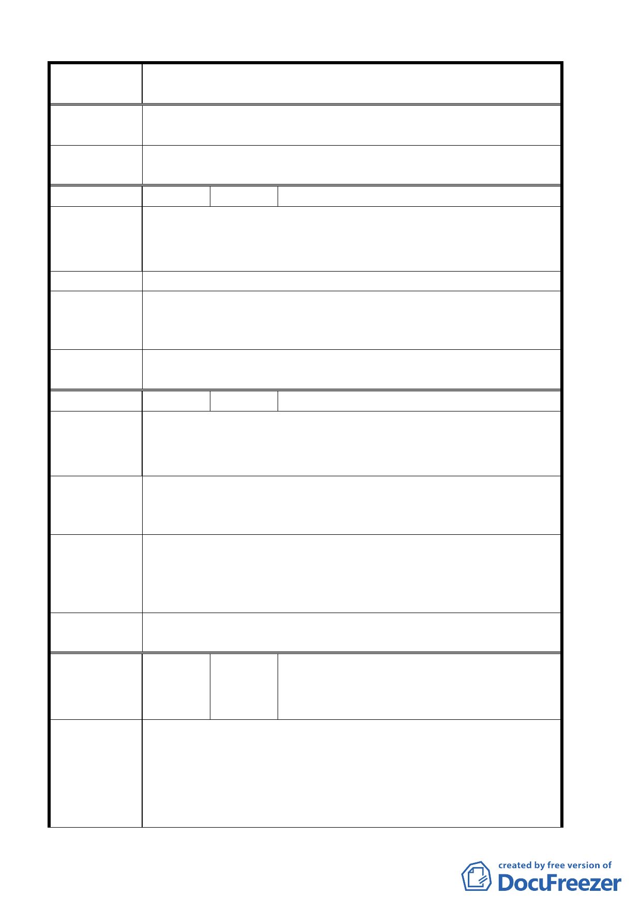

案 名 臺北市北投區都市計畫通盤檢討案（主要計畫）案
專案小組審
查結論
94.3.3 專案小組第 11 次審查會議：同意維持原計畫。
委員會議
決議
同意依專案小組審查結論辦理。
編 號 １６ 陳情人 楊雯蘭
建議位置：北投區大度路怡和巷 3 弄 8 號
陳 情 理 由 建議理由：大度路關渡平原區即規劃如此完善為何獨漏怡和巷
既有住宅區為何不為年年淹水的怡和巷居民一併解決。
建 議 辦 法 變更為住宅區，徹底解決淹水問題。
專案小組審
查結論
93.6.10 專案小組第五次審查會議：依發展局於專案小組報告
及討論，關渡平原未納入本次通盤檢討範圍，相關建議留供發
展局參考。
委員會議
決議
同意依專案小組審查結論辦理。
編 號 １７ 陳情人 黃關山
建議位置：大度路與怡和巷 65 巷農禪寺
陳 情 理 由 建議理由：大度路與怡和巷 65 巷農禪寺， 目前為農業區。
每逢大雨、颱風，此處淹水一直未見改善。
1.建請改為休閒區或住宅區，以便將來迅速發展，並改善此處
建 議 辦 法 淹水問題。
2.路口加裝路燈。
93.6.10 專案小組第五次審查會議：
專 案小組 審 1.依發展局於專案小組報告，關渡平原未納入本次通盤檢討範
查 結 論 圍，建議留供發展局參考。
2.有關加裝路燈請另向本府公園路燈工程管理處反應。
委員會議
決議
同意依專案小組審查結論辦理。
吳文得、黃愿明、詹坤陽、詹雅惠、吳玉秀、廖
編 號 １８ 陳情人 世用、李國華、陳津聰、葉欣若、陳文蓉、馬銘
森、馬鈺婷、謝淑凰、潘佩青、李玉珠
一、本路段原土地使用分區編定為商三用地，於 88 年經貴局編
為特定觀光商業專用區。當時雖然在區公所曾有公告，但
陳情理由
我們都未接到貴局任何有有關該變更之說明會通知。顯然
程序並不周全，我們多數人至今仍以為本地區為商三用地。
二、本區土地原編定為商三用地時，可設立補習班安親班托兒
第 14 頁，共 49 頁